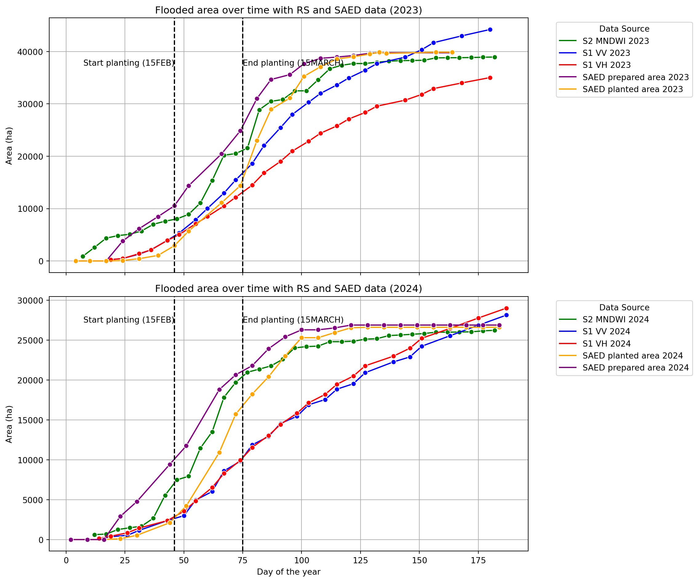
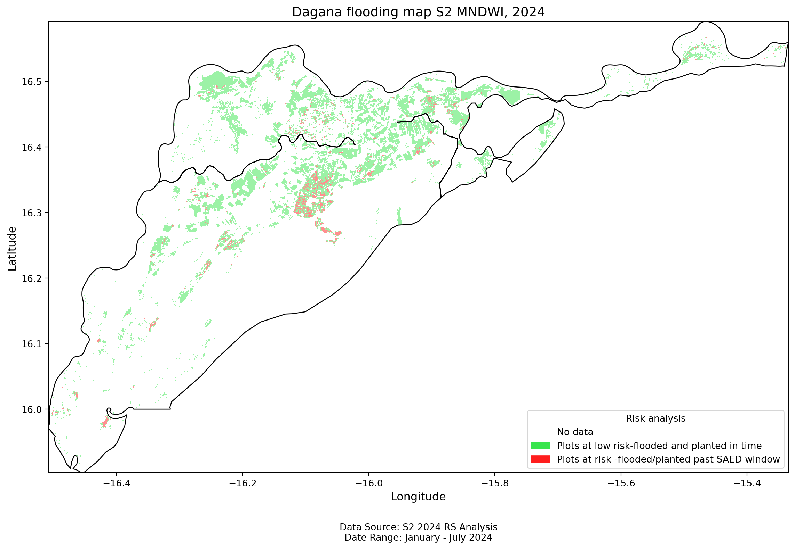
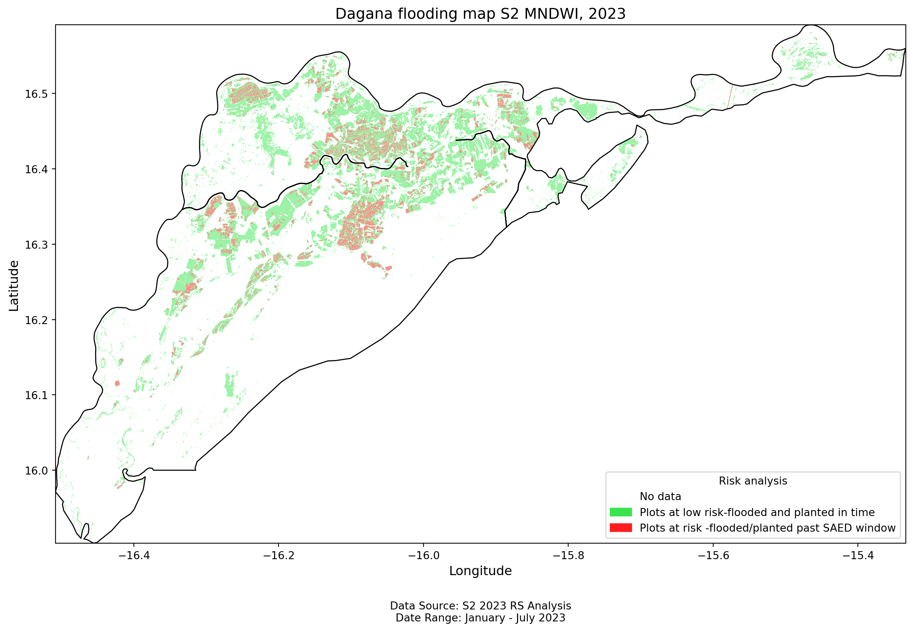
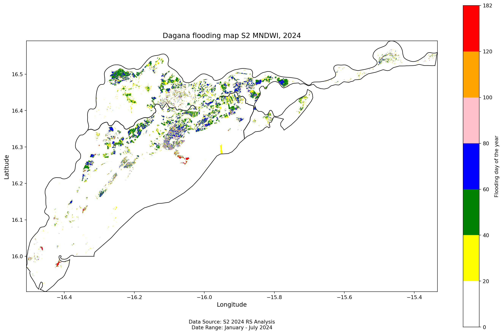
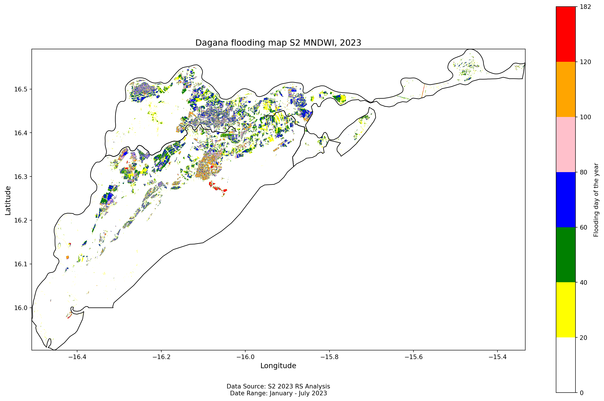
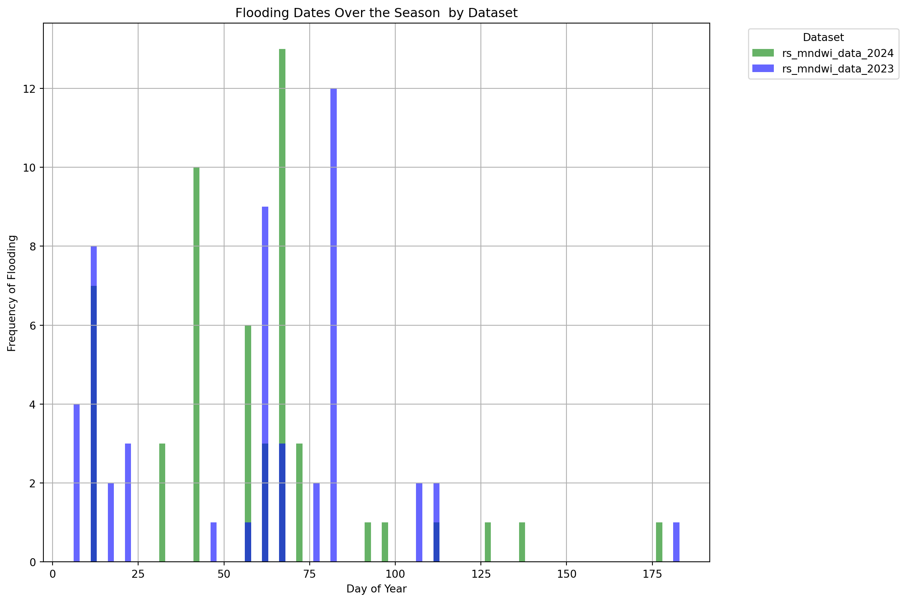

| Date | Area(ha) | Data_source | date | Year | Day of year | |
|---|---|---|---|---|---|---|
| 0 | 2023-01-07 | 874.06 | S2 MNDWI 2023 | 2023-01-07 | 2023 | 7 |
| 1 | 2023-01-12 | 2579.78 | S2 MNDWI 2023 | 2023-01-12 | 2023 | 12 |
| 2 | 2023-01-17 | 4360.24 | S2 MNDWI 2023 | 2023-01-17 | 2023 | 17 |
| 3 | 2023-01-22 | 4842.98 | S2 MNDWI 2023 | 2023-01-22 | 2023 | 22 |
| 4 | 2023-01-27 | 5098.00 | S2 MNDWI 2023 | 2023-01-27 | 2023 | 27 |
| 5 | 2023-02-01 | 5722.50 | S2 MNDWI 2023 | 2023-02-01 | 2023 | 32 |
| 6 | 2023-02-06 | 7000.35 | S2 MNDWI 2023 | 2023-02-06 | 2023 | 37 |
| 7 | 2023-02-11 | 7595.73 | S2 MNDWI 2023 | 2023-02-11 | 2023 | 42 |
| 8 | 2023-02-16 | 8029.28 | S2 MNDWI 2023 | 2023-02-16 | 2023 | 47 |
| 9 | 2023-02-21 | 8898.08 | S2 MNDWI 2023 | 2023-02-21 | 2023 | 52 |
| 10 | 2023-02-26 | 11077.92 | S2 MNDWI 2023 | 2023-02-26 | 2023 | 57 |
| 11 | 2023-03-03 | 15365.54 | S2 MNDWI 2023 | 2023-03-03 | 2023 | 62 |
| 12 | 2023-03-08 | 20195.46 | S2 MNDWI 2023 | 2023-03-08 | 2023 | 67 |
| 13 | 2023-03-13 | 20502.14 | S2 MNDWI 2023 | 2023-03-13 | 2023 | 72 |
| 14 | 2023-03-18 | 21566.32 | S2 MNDWI 2023 | 2023-03-18 | 2023 | 77 |
| 15 | 2023-03-23 | 28874.40 | S2 MNDWI 2023 | 2023-03-23 | 2023 | 82 |
| 16 | 2023-03-28 | 30481.96 | S2 MNDWI 2023 | 2023-03-28 | 2023 | 87 |
| 17 | 2023-04-02 | 30824.37 | S2 MNDWI 2023 | 2023-04-02 | 2023 | 92 |
| 18 | 2023-04-07 | 32479.05 | S2 MNDWI 2023 | 2023-04-07 | 2023 | 97 |
| 19 | 2023-04-12 | 32500.22 | S2 MNDWI 2023 | 2023-04-12 | 2023 | 102 |
| 20 | 2023-04-17 | 34603.62 | S2 MNDWI 2023 | 2023-04-17 | 2023 | 107 |
| 21 | 2023-04-22 | 36720.57 | S2 MNDWI 2023 | 2023-04-22 | 2023 | 112 |
| 22 | 2023-04-27 | 37370.45 | S2 MNDWI 2023 | 2023-04-27 | 2023 | 117 |
| 23 | 2023-05-02 | 37699.19 | S2 MNDWI 2023 | 2023-05-02 | 2023 | 122 |
| 24 | 2023-05-07 | 37703.05 | S2 MNDWI 2023 | 2023-05-07 | 2023 | 127 |
| 25 | 2023-05-12 | 37962.33 | S2 MNDWI 2023 | 2023-05-12 | 2023 | 132 |
| 26 | 2023-05-17 | 38148.42 | S2 MNDWI 2023 | 2023-05-17 | 2023 | 137 |
| 27 | 2023-05-22 | 38253.32 | S2 MNDWI 2023 | 2023-05-22 | 2023 | 142 |
| 28 | 2023-05-27 | 38281.87 | S2 MNDWI 2023 | 2023-05-27 | 2023 | 147 |
| 29 | 2023-06-01 | 38324.78 | S2 MNDWI 2023 | 2023-06-01 | 2023 | 152 |
| 30 | 2023-06-06 | 38787.87 | S2 MNDWI 2023 | 2023-06-06 | 2023 | 157 |
| 31 | 2023-06-11 | 38801.94 | S2 MNDWI 2023 | 2023-06-11 | 2023 | 162 |
| 32 | 2023-06-16 | 38818.56 | S2 MNDWI 2023 | 2023-06-16 | 2023 | 167 |
| 33 | 2023-06-21 | 38849.41 | S2 MNDWI 2023 | 2023-06-21 | 2023 | 172 |
| 34 | 2023-06-26 | 38905.84 | S2 MNDWI 2023 | 2023-06-26 | 2023 | 177 |
| 35 | 2023-07-01 | 38940.95 | S2 MNDWI 2023 | 2023-07-01 | 2023 | 182 |
| 0 | 2023-01-19 | 264.82 | S1 VV 2023 | 2023-01-19 | 2023 | 19 |
| 1 | 2023-01-24 | 471.44 | S1 VV 2023 | 2023-01-24 | 2023 | 24 |
| 2 | 2023-01-31 | 1302.49 | S1 VV 2023 | 2023-01-31 | 2023 | 31 |
| 3 | 2023-02-05 | 2117.56 | S1 VV 2023 | 2023-02-05 | 2023 | 36 |
| 4 | 2023-02-12 | 3942.95 | S1 VV 2023 | 2023-02-12 | 2023 | 43 |
| 5 | 2023-02-17 | 5340.73 | S1 VV 2023 | 2023-02-17 | 2023 | 48 |
| 6 | 2023-02-24 | 7890.21 | S1 VV 2023 | 2023-02-24 | 2023 | 55 |
| 7 | 2023-03-01 | 10029.83 | S1 VV 2023 | 2023-03-01 | 2023 | 60 |
| 8 | 2023-03-08 | 12955.54 | S1 VV 2023 | 2023-03-08 | 2023 | 67 |
| 9 | 2023-03-13 | 15472.40 | S1 VV 2023 | 2023-03-13 | 2023 | 72 |
| 10 | 2023-03-20 | 18592.86 | S1 VV 2023 | 2023-03-20 | 2023 | 79 |
| 11 | 2023-03-25 | 22021.46 | S1 VV 2023 | 2023-03-25 | 2023 | 84 |
| 12 | 2023-04-01 | 25441.34 | S1 VV 2023 | 2023-04-01 | 2023 | 91 |
| 13 | 2023-04-06 | 27960.45 | S1 VV 2023 | 2023-04-06 | 2023 | 96 |
| 14 | 2023-04-13 | 30313.32 | S1 VV 2023 | 2023-04-13 | 2023 | 103 |
| 15 | 2023-04-18 | 31993.57 | S1 VV 2023 | 2023-04-18 | 2023 | 108 |
| 16 | 2023-04-25 | 33616.19 | S1 VV 2023 | 2023-04-25 | 2023 | 115 |
| 17 | 2023-04-30 | 34936.92 | S1 VV 2023 | 2023-04-30 | 2023 | 120 |
| 18 | 2023-05-07 | 36431.93 | S1 VV 2023 | 2023-05-07 | 2023 | 127 |
| 19 | 2023-05-12 | 37691.08 | S1 VV 2023 | 2023-05-12 | 2023 | 132 |
| 20 | 2023-05-24 | 38916.36 | S1 VV 2023 | 2023-05-24 | 2023 | 144 |
| 21 | 2023-05-31 | 40343.00 | S1 VV 2023 | 2023-05-31 | 2023 | 151 |
| 0 | 2023-01-19 | 260.10 | S1 VH 2023 | 2023-01-19 | 2023 | 19 |
| 1 | 2023-01-24 | 462.26 | S1 VH 2023 | 2023-01-24 | 2023 | 24 |
| 2 | 2023-01-31 | 1398.09 | S1 VH 2023 | 2023-01-31 | 2023 | 31 |
| 3 | 2023-02-05 | 2115.30 | S1 VH 2023 | 2023-02-05 | 2023 | 36 |
| 4 | 2023-02-12 | 3924.91 | S1 VH 2023 | 2023-02-12 | 2023 | 43 |
| 5 | 2023-02-17 | 5038.06 | S1 VH 2023 | 2023-02-17 | 2023 | 48 |
| 6 | 2023-02-24 | 7102.99 | S1 VH 2023 | 2023-02-24 | 2023 | 55 |
| 7 | 2023-03-01 | 8487.15 | S1 VH 2023 | 2023-03-01 | 2023 | 60 |
| 8 | 2023-03-08 | 10504.21 | S1 VH 2023 | 2023-03-08 | 2023 | 67 |
| 9 | 2023-03-13 | 12169.24 | S1 VH 2023 | 2023-03-13 | 2023 | 72 |
| 10 | 2023-03-20 | 14474.11 | S1 VH 2023 | 2023-03-20 | 2023 | 79 |
| 11 | 2023-03-25 | 16818.28 | S1 VH 2023 | 2023-03-25 | 2023 | 84 |
| 12 | 2023-04-01 | 19000.89 | S1 VH 2023 | 2023-04-01 | 2023 | 91 |
| 13 | 2023-04-06 | 20966.48 | S1 VH 2023 | 2023-04-06 | 2023 | 96 |
| 14 | 2023-04-13 | 22866.63 | S1 VH 2023 | 2023-04-13 | 2023 | 103 |
| 15 | 2023-04-18 | 24390.12 | S1 VH 2023 | 2023-04-18 | 2023 | 108 |
| 16 | 2023-04-25 | 25790.26 | S1 VH 2023 | 2023-04-25 | 2023 | 115 |
| 17 | 2023-04-30 | 27107.75 | S1 VH 2023 | 2023-04-30 | 2023 | 120 |
| 18 | 2023-05-07 | 28356.70 | S1 VH 2023 | 2023-05-07 | 2023 | 127 |
| 19 | 2023-05-12 | 29563.77 | S1 VH 2023 | 2023-05-12 | 2023 | 132 |
| 20 | 2023-05-24 | 30705.87 | S1 VH 2023 | 2023-05-24 | 2023 | 144 |
| 21 | 2023-05-31 | 31803.72 | S1 VH 2023 | 2023-05-31 | 2023 | 151 |
| 0 | 2023-01-04 | 0.00 | SAED prepared area 2023 | 2023-01-04 | 2023 | 4 |
| 1 | 2023-01-04 | 0.00 | SAED planted area 2023 | 2023-01-04 | 2023 | 4 |
| 2 | 2023-01-10 | 0.00 | SAED prepared area 2023 | 2023-01-10 | 2023 | 10 |
| 3 | 2023-01-10 | 0.00 | SAED planted area 2023 | 2023-01-10 | 2023 | 10 |
| 4 | 2023-01-17 | 0.00 | SAED prepared area 2023 | 2023-01-17 | 2023 | 17 |
| 5 | 2023-01-17 | 0.00 | SAED planted area 2023 | 2023-01-17 | 2023 | 17 |
| 6 | 2023-01-24 | 3791.00 | SAED prepared area 2023 | 2023-01-24 | 2023 | 24 |
| 7 | 2023-01-24 | 83.00 | SAED planted area 2023 | 2023-01-24 | 2023 | 24 |
| 8 | 2023-01-31 | 6169.00 | SAED prepared area 2023 | 2023-01-31 | 2023 | 31 |
| 9 | 2023-01-31 | 436.00 | SAED planted area 2023 | 2023-01-31 | 2023 | 31 |
| 10 | 2023-02-08 | 8463.00 | SAED prepared area 2023 | 2023-02-08 | 2023 | 39 |
| 11 | 2023-02-08 | 1058.00 | SAED planted area 2023 | 2023-02-08 | 2023 | 39 |
| 12 | 2023-02-15 | 10548.00 | SAED prepared area 2023 | 2023-02-15 | 2023 | 46 |
| 13 | 2023-02-15 | 2922.00 | SAED planted area 2023 | 2023-02-15 | 2023 | 46 |
| 14 | 2023-02-21 | 14356.00 | SAED prepared area 2023 | 2023-02-21 | 2023 | 52 |
| 15 | 2023-02-21 | 5697.00 | SAED planted area 2023 | 2023-02-21 | 2023 | 52 |
| 16 | 2023-03-07 | 20450.00 | SAED prepared area 2023 | 2023-03-07 | 2023 | 66 |
| 17 | 2023-03-07 | 11118.00 | SAED planted area 2023 | 2023-03-07 | 2023 | 66 |
| 18 | 2023-03-15 | 24876.00 | SAED prepared area 2023 | 2023-03-15 | 2023 | 74 |
| 19 | 2023-03-15 | 14395.00 | SAED planted area 2023 | 2023-03-15 | 2023 | 74 |
| 20 | 2023-03-22 | 31009.00 | SAED prepared area 2023 | 2023-03-22 | 2023 | 81 |
| 21 | 2023-03-22 | 22973.00 | SAED planted area 2023 | 2023-03-22 | 2023 | 81 |
| 22 | 2023-03-28 | 34650.00 | SAED prepared area 2023 | 2023-03-28 | 2023 | 87 |
| 23 | 2023-03-28 | 28942.00 | SAED planted area 2023 | 2023-03-28 | 2023 | 87 |
| 24 | 2023-04-05 | 35586.00 | SAED prepared area 2023 | 2023-04-05 | 2023 | 95 |
| 25 | 2023-04-05 | 31105.00 | SAED planted area 2023 | 2023-04-05 | 2023 | 95 |
| 26 | 2023-04-11 | 37660.00 | SAED prepared area 2023 | 2023-04-11 | 2023 | 101 |
| 27 | 2023-04-11 | 35265.00 | SAED planted area 2023 | 2023-04-11 | 2023 | 101 |
| 28 | 2023-04-18 | 38694.00 | SAED prepared area 2023 | 2023-04-18 | 2023 | 108 |
| 29 | 2023-04-18 | 37080.00 | SAED planted area 2023 | 2023-04-18 | 2023 | 108 |
| 30 | 2023-04-25 | 38933.00 | SAED prepared area 2023 | 2023-04-25 | 2023 | 115 |
| 31 | 2023-04-25 | 38571.00 | SAED planted area 2023 | 2023-04-25 | 2023 | 115 |
| 32 | 2023-05-02 | 39230.00 | SAED prepared area 2023 | 2023-05-02 | 2023 | 122 |
| 33 | 2023-05-02 | 38992.00 | SAED planted area 2023 | 2023-05-02 | 2023 | 122 |
| 34 | 2023-05-09 | 39665.00 | SAED prepared area 2023 | 2023-05-09 | 2023 | 129 |
| 35 | 2023-05-09 | 39505.00 | SAED planted area 2023 | 2023-05-09 | 2023 | 129 |
| 36 | 2023-05-16 | 39757.00 | SAED prepared area 2023 | 2023-05-16 | 2023 | 136 |
| 37 | 2023-05-16 | 39628.00 | SAED planted area 2023 | 2023-05-16 | 2023 | 136 |
| 38 | 2023-05-13 | 39757.00 | SAED prepared area 2023 | 2023-05-13 | 2023 | 133 |
| 39 | 2023-05-13 | 39857.00 | SAED planted area 2023 | 2023-05-13 | 2023 | 133 |
| 40 | 2023-06-06 | 39757.00 | SAED prepared area 2023 | 2023-06-06 | 2023 | 157 |
| 41 | 2023-06-06 | 39857.00 | SAED planted area 2023 | 2023-06-06 | 2023 | 157 |
| 42 | 2023-06-13 | 39757.00 | SAED prepared area 2023 | 2023-06-13 | 2023 | 164 |
| 43 | 2023-06-13 | 39857.00 | SAED planted area 2023 | 2023-06-13 | 2023 | 164 |
| 0 | 2024-01-12 | 618.46 | S2 MNDWI 2024 | 2024-01-12 | 2024 | 12 |
| 1 | 2024-01-17 | 689.53 | S2 MNDWI 2024 | 2024-01-17 | 2024 | 17 |
| 2 | 2024-01-22 | 1260.60 | S2 MNDWI 2024 | 2024-01-22 | 2024 | 22 |
| 3 | 2024-01-27 | 1479.62 | S2 MNDWI 2024 | 2024-01-27 | 2024 | 27 |
| 4 | 2024-02-01 | 1673.02 | S2 MNDWI 2024 | 2024-02-01 | 2024 | 32 |
| 5 | 2024-02-06 | 2670.23 | S2 MNDWI 2024 | 2024-02-06 | 2024 | 37 |
| 6 | 2024-02-11 | 5552.47 | S2 MNDWI 2024 | 2024-02-11 | 2024 | 42 |
| 7 | 2024-02-16 | 7479.15 | S2 MNDWI 2024 | 2024-02-16 | 2024 | 47 |
| 8 | 2024-02-21 | 7939.74 | S2 MNDWI 2024 | 2024-02-21 | 2024 | 52 |
| 9 | 2024-02-26 | 11471.69 | S2 MNDWI 2024 | 2024-02-26 | 2024 | 57 |
| 10 | 2024-03-02 | 13511.68 | S2 MNDWI 2024 | 2024-03-02 | 2024 | 62 |
| 11 | 2024-03-07 | 17830.79 | S2 MNDWI 2024 | 2024-03-07 | 2024 | 67 |
| 12 | 2024-03-12 | 19712.43 | S2 MNDWI 2024 | 2024-03-12 | 2024 | 72 |
| 13 | 2024-03-17 | 20984.70 | S2 MNDWI 2024 | 2024-03-17 | 2024 | 77 |
| 14 | 2024-03-22 | 21372.69 | S2 MNDWI 2024 | 2024-03-22 | 2024 | 82 |
| 15 | 2024-03-27 | 21778.42 | S2 MNDWI 2024 | 2024-03-27 | 2024 | 87 |
| 16 | 2024-04-01 | 22616.00 | S2 MNDWI 2024 | 2024-04-01 | 2024 | 92 |
| 17 | 2024-04-06 | 24033.40 | S2 MNDWI 2024 | 2024-04-06 | 2024 | 97 |
| 18 | 2024-04-11 | 24196.84 | S2 MNDWI 2024 | 2024-04-11 | 2024 | 102 |
| 19 | 2024-04-16 | 24259.49 | S2 MNDWI 2024 | 2024-04-16 | 2024 | 107 |
| 20 | 2024-04-21 | 24812.09 | S2 MNDWI 2024 | 2024-04-21 | 2024 | 112 |
| 21 | 2024-04-26 | 24812.69 | S2 MNDWI 2024 | 2024-04-26 | 2024 | 117 |
| 22 | 2024-05-01 | 24872.08 | S2 MNDWI 2024 | 2024-05-01 | 2024 | 122 |
| 23 | 2024-05-06 | 25130.41 | S2 MNDWI 2024 | 2024-05-06 | 2024 | 127 |
| 24 | 2024-05-11 | 25194.67 | S2 MNDWI 2024 | 2024-05-11 | 2024 | 132 |
| 25 | 2024-05-16 | 25575.17 | S2 MNDWI 2024 | 2024-05-16 | 2024 | 137 |
| 26 | 2024-05-21 | 25655.38 | S2 MNDWI 2024 | 2024-05-21 | 2024 | 142 |
| 27 | 2024-05-26 | 25741.40 | S2 MNDWI 2024 | 2024-05-26 | 2024 | 147 |
| 28 | 2024-05-31 | 25836.58 | S2 MNDWI 2024 | 2024-05-31 | 2024 | 152 |
| 29 | 2024-06-05 | 26003.64 | S2 MNDWI 2024 | 2024-06-05 | 2024 | 157 |
| 30 | 2024-06-10 | 26004.66 | S2 MNDWI 2024 | 2024-06-10 | 2024 | 162 |
| 31 | 2024-06-15 | 26027.04 | S2 MNDWI 2024 | 2024-06-15 | 2024 | 167 |
| 32 | 2024-06-20 | 26050.29 | S2 MNDWI 2024 | 2024-06-20 | 2024 | 172 |
| 33 | 2024-06-25 | 26167.00 | S2 MNDWI 2024 | 2024-06-25 | 2024 | 177 |
| 34 | 2024-06-30 | 26245.02 | S2 MNDWI 2024 | 2024-06-30 | 2024 | 182 |
| 0 | 2024-01-14 | 106.99 | S1 VV 2024 | 2024-01-14 | 2024 | 14 |
| 1 | 2024-01-19 | 352.10 | S1 VV 2024 | 2024-01-19 | 2024 | 19 |
| 2 | 2024-01-26 | 539.86 | S1 VV 2024 | 2024-01-26 | 2024 | 26 |
| 3 | 2024-01-31 | 1151.80 | S1 VV 2024 | 2024-01-31 | 2024 | 31 |
| 4 | 2024-02-12 | 2379.84 | S1 VV 2024 | 2024-02-12 | 2024 | 43 |
| 5 | 2024-02-19 | 2995.77 | S1 VV 2024 | 2024-02-19 | 2024 | 50 |
| 6 | 2024-02-24 | 4954.35 | S1 VV 2024 | 2024-02-24 | 2024 | 55 |
| 7 | 2024-03-02 | 6021.96 | S1 VV 2024 | 2024-03-02 | 2024 | 62 |
| 8 | 2024-03-07 | 8596.86 | S1 VV 2024 | 2024-03-07 | 2024 | 67 |
| 9 | 2024-03-14 | 9835.96 | S1 VV 2024 | 2024-03-14 | 2024 | 74 |
| 10 | 2024-03-19 | 11872.63 | S1 VV 2024 | 2024-03-19 | 2024 | 79 |
| 11 | 2024-03-26 | 12929.51 | S1 VV 2024 | 2024-03-26 | 2024 | 86 |
| 12 | 2024-03-31 | 14555.43 | S1 VV 2024 | 2024-03-31 | 2024 | 91 |
| 13 | 2024-04-07 | 15454.54 | S1 VV 2024 | 2024-04-07 | 2024 | 98 |
| 14 | 2024-04-12 | 16902.79 | S1 VV 2024 | 2024-04-12 | 2024 | 103 |
| 15 | 2024-04-19 | 17558.07 | S1 VV 2024 | 2024-04-19 | 2024 | 110 |
| 16 | 2024-04-24 | 18862.38 | S1 VV 2024 | 2024-04-24 | 2024 | 115 |
| 17 | 2024-05-01 | 19541.53 | S1 VV 2024 | 2024-05-01 | 2024 | 122 |
| 18 | 2024-05-06 | 20924.40 | S1 VV 2024 | 2024-05-06 | 2024 | 127 |
| 19 | 2024-05-18 | 22278.01 | S1 VV 2024 | 2024-05-18 | 2024 | 139 |
| 20 | 2024-05-25 | 22902.51 | S1 VV 2024 | 2024-05-25 | 2024 | 146 |
| 21 | 2024-05-30 | 24243.12 | S1 VV 2024 | 2024-05-30 | 2024 | 151 |
| 0 | 2024-01-14 | 162.13 | S1 VH 2024 | 2024-01-14 | 2024 | 14 |
| 1 | 2024-01-19 | 425.58 | S1 VH 2024 | 2024-01-19 | 2024 | 19 |
| 2 | 2024-01-26 | 844.81 | S1 VH 2024 | 2024-01-26 | 2024 | 26 |
| 3 | 2024-01-31 | 1438.56 | S1 VH 2024 | 2024-01-31 | 2024 | 31 |
| 4 | 2024-02-12 | 2380.67 | S1 VH 2024 | 2024-02-12 | 2024 | 43 |
| 5 | 2024-02-19 | 3555.42 | S1 VH 2024 | 2024-02-19 | 2024 | 50 |
| 6 | 2024-02-24 | 4841.87 | S1 VH 2024 | 2024-02-24 | 2024 | 55 |
| 7 | 2024-03-02 | 6521.18 | S1 VH 2024 | 2024-03-02 | 2024 | 62 |
| 8 | 2024-03-07 | 8286.28 | S1 VH 2024 | 2024-03-07 | 2024 | 67 |
| 9 | 2024-03-14 | 9943.31 | S1 VH 2024 | 2024-03-14 | 2024 | 74 |
| 10 | 2024-03-19 | 11556.28 | S1 VH 2024 | 2024-03-19 | 2024 | 79 |
| 11 | 2024-03-26 | 13053.40 | S1 VH 2024 | 2024-03-26 | 2024 | 86 |
| 12 | 2024-03-31 | 14440.46 | S1 VH 2024 | 2024-03-31 | 2024 | 91 |
| 13 | 2024-04-07 | 15834.43 | S1 VH 2024 | 2024-04-07 | 2024 | 98 |
| 14 | 2024-04-12 | 17147.71 | S1 VH 2024 | 2024-04-12 | 2024 | 103 |
| 15 | 2024-04-19 | 18203.91 | S1 VH 2024 | 2024-04-19 | 2024 | 110 |
| 16 | 2024-04-24 | 19476.34 | S1 VH 2024 | 2024-04-24 | 2024 | 115 |
| 17 | 2024-05-01 | 20507.44 | S1 VH 2024 | 2024-05-01 | 2024 | 122 |
| 18 | 2024-05-06 | 21789.96 | S1 VH 2024 | 2024-05-06 | 2024 | 127 |
| 19 | 2024-05-18 | 22997.77 | S1 VH 2024 | 2024-05-18 | 2024 | 139 |
| 20 | 2024-05-25 | 23997.88 | S1 VH 2024 | 2024-05-25 | 2024 | 146 |
| 21 | 2024-05-30 | 25244.18 | S1 VH 2024 | 2024-05-30 | 2024 | 151 |
| 44 | 2024-01-02 | 0.00 | SAED planted area 2024 | 2024-01-02 | 2024 | 2 |
| 45 | 2024-01-02 | 0.00 | SAED prepared area 2024 | 2024-01-02 | 2024 | 2 |
| 46 | 2024-01-09 | 0.00 | SAED planted area 2024 | 2024-01-09 | 2024 | 9 |
| 47 | 2024-01-09 | 0.00 | SAED prepared area 2024 | 2024-01-09 | 2024 | 9 |
| 48 | 2024-01-16 | 0.00 | SAED planted area 2024 | 2024-01-16 | 2024 | 16 |
| 49 | 2024-01-16 | 0.00 | SAED prepared area 2024 | 2024-01-16 | 2024 | 16 |
| 50 | 2024-01-23 | 102.00 | SAED planted area 2024 | 2024-01-23 | 2024 | 23 |
| 51 | 2024-01-23 | 2903.00 | SAED prepared area 2024 | 2024-01-23 | 2024 | 23 |
| 52 | 2024-01-30 | 533.00 | SAED planted area 2024 | 2024-01-30 | 2024 | 30 |
| 53 | 2024-01-30 | 4758.00 | SAED prepared area 2024 | 2024-01-30 | 2024 | 30 |
| 54 | 2024-02-13 | 2113.00 | SAED planted area 2024 | 2024-02-13 | 2024 | 44 |
| 55 | 2024-02-13 | 9434.00 | SAED prepared area 2024 | 2024-02-13 | 2024 | 44 |
| 56 | 2024-02-20 | 4212.00 | SAED planted area 2024 | 2024-02-20 | 2024 | 51 |
| 57 | 2024-02-20 | 11751.00 | SAED prepared area 2024 | 2024-02-20 | 2024 | 51 |
| 58 | 2024-03-05 | 10907.00 | SAED planted area 2024 | 2024-03-05 | 2024 | 65 |
| 59 | 2024-03-05 | 18796.00 | SAED prepared area 2024 | 2024-03-05 | 2024 | 65 |
| 60 | 2024-03-12 | 15722.00 | SAED planted area 2024 | 2024-03-12 | 2024 | 72 |
| 61 | 2024-03-12 | 20661.00 | SAED prepared area 2024 | 2024-03-12 | 2024 | 72 |
| 62 | 2024-03-19 | 18239.00 | SAED planted area 2024 | 2024-03-19 | 2024 | 79 |
| 63 | 2024-03-19 | 21805.00 | SAED prepared area 2024 | 2024-03-19 | 2024 | 79 |
| 64 | 2024-03-26 | 20427.00 | SAED planted area 2024 | 2024-03-26 | 2024 | 86 |
| 65 | 2024-03-26 | 23937.00 | SAED prepared area 2024 | 2024-03-26 | 2024 | 86 |
| 66 | 2024-04-02 | 23028.00 | SAED planted area 2024 | 2024-04-02 | 2024 | 93 |
| 67 | 2024-04-02 | 25418.00 | SAED prepared area 2024 | 2024-04-02 | 2024 | 93 |
| 68 | 2024-04-09 | 25313.00 | SAED planted area 2024 | 2024-04-09 | 2024 | 100 |
| 69 | 2024-04-09 | 26301.00 | SAED prepared area 2024 | 2024-04-09 | 2024 | 100 |
| 70 | 2024-04-16 | 25313.00 | SAED planted area 2024 | 2024-04-16 | 2024 | 107 |
| 71 | 2024-04-16 | 26301.00 | SAED prepared area 2024 | 2024-04-16 | 2024 | 107 |
| 72 | 2024-04-16 | 26301.00 | SAED prepared area 2024 | 2024-04-16 | 2024 | 107 |
| 73 | 2024-04-16 | 25313.00 | SAED planted area 2024 | 2024-04-16 | 2024 | 107 |
| 74 | 2024-04-23 | 26538.00 | SAED prepared area 2024 | 2024-04-23 | 2024 | 114 |
| 75 | 2024-04-23 | 25950.00 | SAED planted area 2024 | 2024-04-23 | 2024 | 114 |
| 76 | 2024-04-30 | 26900.00 | SAED prepared area 2024 | 2024-04-30 | 2024 | 121 |
| 77 | 2024-04-30 | 26558.00 | SAED planted area 2024 | 2024-04-30 | 2024 | 121 |
| 78 | 2024-05-07 | 26900.00 | SAED prepared area 2024 | 2024-05-07 | 2024 | 128 |
| 79 | 2024-05-07 | 26618.00 | SAED planted area 2024 | 2024-05-07 | 2024 | 128 |
| 80 | 2024-05-14 | 26900.00 | SAED prepared area 2024 | 2024-05-14 | 2024 | 135 |
| 81 | 2024-05-14 | 26618.00 | SAED planted area 2024 | 2024-05-14 | 2024 | 135 |
| 82 | 2024-05-21 | 26900.00 | SAED prepared area 2024 | 2024-05-21 | 2024 | 142 |
| 83 | 2024-05-21 | 26618.00 | SAED planted area 2024 | 2024-05-21 | 2024 | 142 |
| 84 | 2024-05-28 | 26900.00 | SAED prepared area 2024 | 2024-05-28 | 2024 | 149 |
| 85 | 2024-05-28 | 26618.00 | SAED planted area 2024 | 2024-05-28 | 2024 | 149 |
| 86 | 2024-06-04 | 26900.00 | SAED prepared area 2024 | 2024-06-04 | 2024 | 156 |
| 87 | 2024-06-04 | 26618.00 | SAED planted area 2024 | 2024-06-04 | 2024 | 156 |
| 88 | 2024-06-11 | 26900.00 | SAED prepared area 2024 | 2024-06-11 | 2024 | 163 |
| 89 | 2024-06-11 | 26618.00 | SAED planted area 2024 | 2024-06-11 | 2024 | 163 |
| 90 | 2024-06-18 | 26900.00 | SAED prepared area 2024 | 2024-06-18 | 2024 | 170 |
| 91 | 2024-06-18 | 26618.00 | SAED planted area 2024 | 2024-06-18 | 2024 | 170 |
| 92 | 2024-06-25 | 26900.00 | SAED prepared area 2024 | 2024-06-25 | 2024 | 177 |
| 93 | 2024-06-25 | 26618.00 | SAED planted area 2024 | 2024-06-25 | 2024 | 177 |
| 94 | 2024-07-02 | 26900.00 | SAED prepared area 2024 | 2024-07-02 | 2024 | 184 |
| 95 | 2024-07-02 | 26618.00 | SAED planted area 2024 | 2024-07-02 | 2024 | 184 |
Dagana dry hot season flooding detection analysis
Overview
The agricultural sub-sector, particularly smallholder agriculture, is the focal point of the FIS, Local risk control service work stream. Inter-farm variability in management practices among small farms largely determines yield outcomes. Optimizing agronomic practices alone is insufficient for ensuring food security- significantly more inputs are required. The primary challenge lies within the agricultural value chain, particularly concerning access to credit for small farmers, which financial service providers perceive as risky and costly. The objective of this work stream is to develop services that leverage Earth Observation (EO) to mitigate risk perception, thereby facilitating investments in agriculture. These services aim to reduce the costs associated with quantifying risk and value at risk while enabling access to innovative financing options like climate finance. Emphasis will be placed on interventions bridging the agriculture and environmental sectors, particularly within the Agriculture and Food Security and Ecosystem and Carbon Management thematic areas in the SERVIR context. EO-based solutions can revolutionize risk management in agriculture, addressing challenges such as delays in planting due to late credit and input arrivals, which affect harvest quality, sales prices, and overall risk in the agricultural value chain.
FIS1.6: Fusion of Sentinel 1 and Sentinel 2 for paddy flooding timing estimates in the Dagana
Note
We demonstrate the flooding activities and the impact of credit access.
A brief summary of the analysis:
- Flooding timelines-analyze the flooding data over time to identify trends and patterns.
- Create a line chart or area chart to visualize the flooding area or number of affected locations over the given time period.
- Highlight significant events or peak flooding periods..
- Flooding Progression: Analyze how the flooding progressed over time in different locations.
- Create a heatmap or a series of maps to visualize the spatial and temporal distribution of flooding.
- Identify areas where flooding started early or persisted for a longer duration.
- Comparison with Historical Data-
- Use historical (previous years) flooding data, compare the current season flooding activities.
- Create a bar chart or line chart to show the comparison and highlight any significant deviations.
- Provide insights into whether the current flooding is above or below historical levels.
- Impact Analysis on access to credit.
- Assess the potential impact of early access to credit on flooding on various locations.
- Analyze the data in relation to land use, SRI practices, population density, or critical infrastructure.
- Create a risk map or categorize localities into different risk levels.
- Provide recommendations for late flooding/planting mitigation measures or preparedness planning.Variable included
- crop_name: Rice
- Region: Dagana, Senegal
- season_name: Dry hot season
- planting_year: 2024, 2023
- Estimated flooding datesData availability
Note
Google Earth Engine hosts an extensive archive of Sentinel-1 and Sentinel-2 data, encompassing dual-polarized and interferometric wide-swath images for Sentinel-1, and multispectral imagery in the visible and infrared spectrum for Sentinel-2. This diverse dataset is available at various spatial and temporal resolutions, making it suitable for a wide range of applications.
Workflow description
Sentinel 2
- Data acquistion:
- Sentinel-2’s multispectral capabilities are well-suited for land cover and vegetation analysis. With its wide coverage and high spatial resolution, it provides valuable information for monitoring changes in land cover and vegetation growth
- We use area of interest boundaries to access through Google Earth Engine: RGB, Normalized Difference Water Index(NDWI), Modified Normalized Difference Water Index (MNDWI), Normalized Difference Vegetation Index (NDVI) and the mask cloud layer depending on your current task.
- Clouds are identified from the S2 cloud probability dataset (s2cloudless) and downloaded as cloud images. You can set the probability/percentage of cloud presence in all images between 0 and 100.
- s2cloudless is a machine learning algorithm for computing cloud masks on Sentinel-2 imagery. There is a pre-computed cloud masks for the entire Sentinel-2 archive via the Sentinel Hub service. It assigns each pixel in an image a cloud probability solely based on the pixel’s ten Sentinel-2 band values.
- MNDWI is calculated using the Green band mid infrared bands((Green - SWIR (band 11) ) / (Green + SWIR (band 11))).
- One advantage of MNDWI is that it diminishes built-up areas that are always confused as water bodies compared to NDWI.
- The major limitations of MNDWI: it easily misclassifies shadow and dark roads as water bodies.
- The water bodies appear as bright pixels while dryland appears dark pixels.
- In prepocessing the images before downloading, permanent water is excluded before gnerating the MNDWI tiff.
- Extracting the flooded areas:
- Firstly, we generate the flooding map that shows the flooded areas extend.
- The MNDWI values range from -1≤x≤1 and we apply series of logical AND operations to the MNDWI tiff files to identify pixels that represent water bodies (x>0) and that have low cloud cover (y<40).
- The initial MNDWI TIFF file introduced into the workflow is important when extracting flooded areas. Initially, a working array is generated from the RGB TIFF file. Subsequently, using numpy array operations, update this working array with pixel values from the MNDWI TIFFs. Afterwards, assign a value, say 2, to all pixels in the working array where the corresponding pixel values in the first MNDWI TIFF are greater than 0 (indicating water pixels), effectively masking out all pixels where water is present.
- Subsequent MNDWI tiff files’ water pixels are then accumulated through a logical process that first verifies if the pixel in the working array is already identified as part of water pixels. This step ensures that pixels flagged in previous iterations are not overwritten.
- The resulting image contains a value of 0 for all non-water pixels, and the day of year for each water pixel.
- Secondly, we extract the convert the water pixels into areas in hectares. Create a proportion of area flooded for each grid cell/plot/point within the area, using a reference RGB image and the shapefile.
- Create a dataframe from the proportion data under flooding for each date.
- Estimate the flooding dates
- The aim is to determine the date of the maximum flooding.
Sentinel 1
Data acquistion:
- Sentinel-1, operating in C-band, has proven to be a valuable asset for flood monitoring due to its unique capabilities. Its all-weather and day-and-night imaging capacity, coupled with the ability to penetrate through clouds and capture surface changes, makes it ideal for flood detection.
- To ensure data homogeneity, a meticulous filtering process was executed. This process encompassed the selection of data based on specific criteria, including instrument mode (’IW’ for Interferometric Wide Swath), orbit properties (’ASCENDING’ or ’DESCENDING’), and transmitterreceiver polarizations (’Vertical-Vertical’ (’VV’) and ’Vertical-Horizontal’ (’VH’)).
- Furthermore, the Sentinel-1 data was segregated into distinct polarizations for ’VV,’ ’VH,’ and ’VV/VH’ (ratio) images.
- The VV band is a good indicator of structural characteristics, such as vegetation density and height, making it useful for crop monitoring. As vegetation matures and its density increases, the VV signal tends to decrease due to increased attenuation caused by the dense canopy.
- Conversely, the VH band is sensitive to surface roughness and moisture content. In the context of rice fields, the VH band can be valuable for flood mapping as it enables the identification of flooded areas. Water bodies, including flooded rice paddies, typically exhibit high VH backscatter due to the specular reflection of radar waves on the smooth water surface. By comparing the VV/VH ratio, it becomes possible to differentiate between standing crops and harvested or sparse areas. Harvested or sparse areas tend to have higher VV/VH ratios due to reduced vegetation density. Similarly, flooded rice fields exhibit different radar backscatter characteristics compared to non-flooded areas.
- The VV polarization is sensitive to the presence of water, while the VH polarization is influenced by both surface roughness and the presence of water.
- By comparing the VV/VH ratio, flooded areas in rice fields can be identified, marked by higher VV/VH ratios due to increased backscatter from water.
Extracting the flooded areas:
- Sentinel-1 SAR images are filtered based on instrument mode, orbit properties, and polarization (VV, VH, VV/VH). Then two image collections are defined: “Before-collection” for baseline conditions and “After-collection” for monitoring changes during and after potential flooding events.
- Flood area detection: Comparison of “Before” and “After” images to identify changes using a threshold value (1.25) based on statistical properties.
- The water pixels are converted into areas in hectares.
Estimate the flooding dates
- The aim is to determine the date of the maximum flooding.
1. Flooding activities progress and timeline analysis
a. The timeseries data for S1, S2, and SAED data
The following data shows the cumulative flooded area over time. Included also is SAED data for the dry hot season in 2023 and 2024.
b. Comparison the above output
The SAED forecast for 2024 predicts a decrease to 39,850 hectares under rice cultivation compared to 2023, when it was 41,000 hectares.
Observation: - Both years show a gradual increase in flooded area from the start of the year, with a significant rise around the planting period (February 15th to March 15th). - Flooded Area (2023): Higher overall flooded area in 2023 compared to 2024. - The trend shows that most of the flooding and planting activities are concentrated around the designated planting period (February 15th to March 15th). - The S1 data in 2024 indicates a smaller extent of flooding activities compared to S2 and SAED data. - The S1 data aligns closely with the SAED prepared area data.

2. Mapping the flooding extend in dagana in 2023 and 2024
a. Risky analysis associated to flooding
The comparison of the flooding maps for 2023 and 2024 highlights the spatial and temporal variations in flooding risks within the Dagana region. These insights can guide better agricultural and flood management practices to mitigate risks and ensure timely planting.
We utilize flooding date information to classify the plots that have experienced flooding and have been planted within the SAED window, which spans from February 15th to March 15th. Given that the latest image is from March 17th, plots are categorized as low risk if the flooding date falls on or before the 77th day of the year and as high risk if flooded/planted after day 77.
Observations:
- In both years, the majority of the area is marked in green, indicating low-risk plots.
- There are notable differences in the distribution of red areas (high-risk plots) between the two years.
- The 2024 map shows a higher concentration of red areas (high-risk plots) in the southern and central parts of the region, with scattered red areas in the northern part.
- The 2023 map shows a different distribution pattern, with more red areas in the northern and central parts of the region.
- The southern part of the 2023 map has fewer red areas compared to the 2024 map.
- Fewer red areas suggest better alignment with the planting schedule, possibly due to more favorable conditions or better management.
- More red areas indicate that many plots were either flooded or planted past the SAED window, suggesting potential delays due to various reasons, including delayed financing which affects access to labor and resources.
- In summary, the 2024 flooding map shows a better overall flooding and planting situation with fewer high-risk (red) plots compared to 2023.The differences in risk distribution between the two years can help in understanding the changing patterns of flooding and adjusting agricultural practices accordingly. Areas with consistent high-risk plots across years may need further investigation and potentially more robust flooding management strategies to avoid credit defaults and losses.


b. Spatial distribution of the maps
- Flooding maps - We will show just the 2024 map that depicts the extent of the flooded rice area across the plots in the region, between January and 1st July.
- The spatial distribution of the estimated dates in the region.


Estimated flooding dates for 2023 and 2024 using Sentinel 2
Frequency of flooding dates over the year,
This bar chart shows the frequency of flooding dates over the season, categorized by two different datasets: “rs_mndwi_data_2024” and “rs_mndwi_data_2023”.
Observations:
- Flooding events appear to be concentrated primarily in the first 100 days of the year for both datasets.
- There are several peaks in flooding frequency for both datasets, indicating multiple significant flooding events or periods.
- The remote sensing data 2024 (blue bars) shows a higher frequency of flooding events compared to remotensing data 2023 (green bars), especially around days 50 to 75.
- Both datasets have similar patterns, but remotensing data 2024 has more consistent and higher frequency peaks.
- Days with notable flooding events include around days 10, 25, 50, 75, and 100. Both datasets show some flooding events on these days, but the frequency differs.

Next steps
To do list
- Finalize the sentinel 1 workflow
- Fuse the sentinel 1 and 2 output for flooding timing estimates
- Compare the estimated flooding dates with field data from agCelerant.
- Adopt the fused workflow for harvest monitoring.